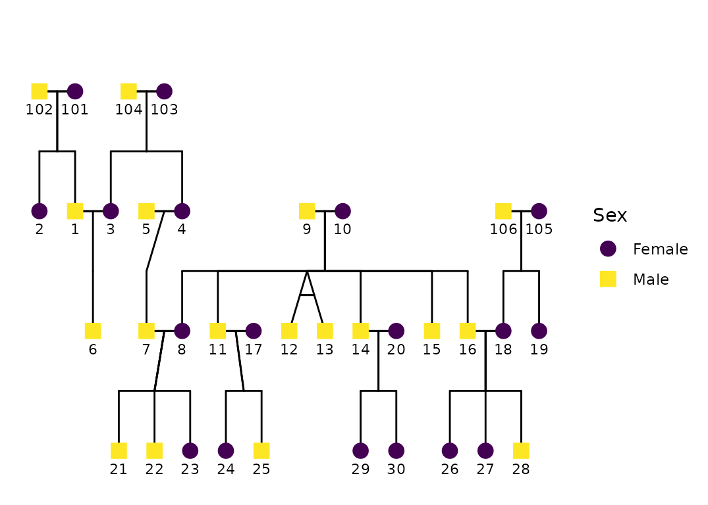
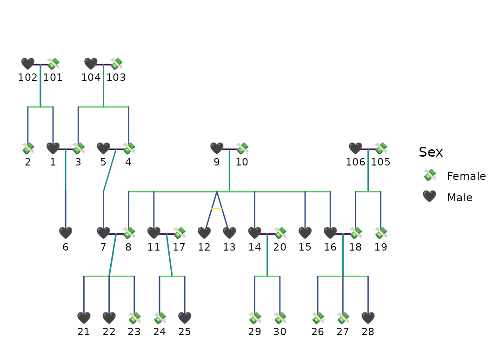
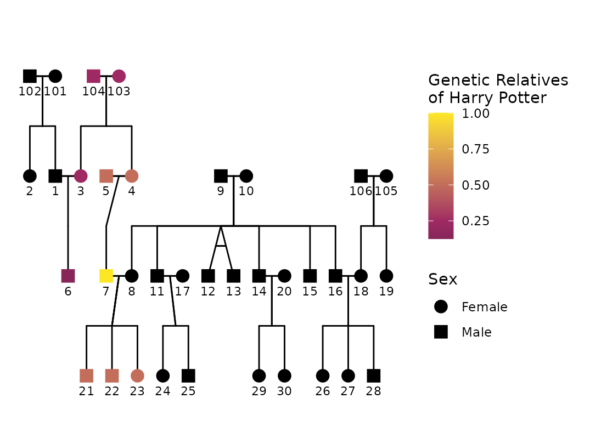

Introduction
This vignette demonstrates pedigree visualization with
ggPedigree() from ggpedigree. Pedigree plots
are central to fields like human genetics, behavioral science, and
genealogy, where understanding lineage and familial relationships
informs diagnosis, analysis, and interpretation.
ggPedigree() builds on ggplot2 and
kinship2, leveraging modular helpers from both
BGmisc and ggpedigree to streamline plot
generation while retaining full aesthetic flexibility.
Unlike base R pedigree tools, this package returns a
ggplot2 object, meaning users can customize their output
using familiar ggplot2 syntax, themes, scales, and
layering. Throughout this vignette, we walk through basic usage, layout
control, status overlays, aesthetic customization, and faceting for
multifamily visualization.
We use two bundled example datasets (from BGmisc) to
illustrate the package’s capabilities. The first dataset,
potter, contains a fictional wizarding family tree, while
the second dataset, hazard, includes a multigenerational
historical pedigree with affected/unaffected status.
Basic usage
We begin by loading the required libraries. These include the main
plotting package ggpedigree, helper utilities from
BGmisc, and supporting tools for aesthetic and data
manipulation.
library(ggpedigree) # ggPedigree lives here
library(BGmisc) # helper utilities & example data
library(ggplot2) # ggplot2 for plotting
library(viridis) # viridis for color palettes
library(tidyverse) # for data wranglingThe simplest usage requires a data frame and column names for family
and individual IDs. Here’s a basic pedigree plot using the
potter data:
ggPedigree(potter,
famID = "famID",
personID = "personID"
)
Behind the scenes, ggPedigree():
reshapes the data by family (
ped2fam()),recodes sex (e.g., 0/1/NA) into semantic labels via
recodeSex()extracts a layout grid with
calculateCoordinates()builds connection segments for spouses, siblings, parents, and offspring with
calculateConnections()
The result is returned as a ggplot2 object, which allows
immediate post-processing with standard ggplot syntax.
Customizing Aesthetics
Most appearance settings are managed through a config
list, which allows for fine-tuned customization. If any options are
omitted, they fall back to predefined defaults. For example, we can turn
off sex-based fill color and assign specific colors to connection
segments, while also changing the shapes of individuals in the
pedigree:
ggPedigree(
potter,
famID = "famID",
personID = "personID",
config = list(
code_male = 1, # Here, 1 = male, 0 = female
sex_color_include = FALSE,
point_size = 5,
outline_multiplier = 1.15,
line_width = 2.5,
sex_shape_female = "üí∏",
sex_shape_male = "üñ§",
segment_spouse_color = viridis_pal()(5)[1],
segment_sibling_color = viridis_pal()(5)[2],
segment_parent_color = viridis_pal()(5)[3],
segment_offspring_color = viridis_pal()(5)[4],
segment_mz_color = viridis_pal()(5)[5],
# segment_linetype = 3,
outline_include = TRUE,
outline_color = "grey" # viridis_pal()(5)[5]
)
)
#> Warning in buildPlotConfig(default_config = default_config, config = config, :
#> The following config values are not recognized by getDefaultPlotConfig():
#> line_width
As with any ggplot2 object, further theming and labeling
can be applied using layers or themes. For instance:
ggPedigree(potter,
famID = "famID",
personID = "personID"
) +
theme_bw(base_size = 12)
This can be particularly useful for matching house styles in academic publications or removing clutter for presentations.
Labeling Individuals
You can also label individuals in the pedigree using the
label_method argument. The default is
geom_label_repel(), which uses the ggrepel
package to avoid overlapping labels. You can also use
geom_text() for simpler labeling. Other configurable
options include label_col for the label column,
label_text_angle for text rotation,
label_nudge_y for vertical adjustment, and
label_nudge_x for horizontal adjustment.
ggPedigree(
potter,
famID = "famID",
personID = "personID",
config = list(
label_col = "name",
sex_color_palette = c("pink", "blue"),
label_text_angle = -45,
label_nudge_y = -.25,
label_nudge_x = 0.45,
label_method = "geom_text",
# sex_color_palette = c("black", "black"),
sex_color_include = TRUE
)
)
#> Warning in buildPlotConfig(default_config = default_config, config = config, :
#> The following config values are not recognized by getDefaultPlotConfig():
#> label_col
Overlaying Status Information
In many applied settings, pedigrees include binary phenotypes such as
affected/unaffected status. To incorporate this, use the
status_column argument to point to a column containing the
relevant variable.
data("hazard")
p <- ggPedigree(
hazard,
famID = "famID",
personID = "ID",
status_column = "affected",
config = list(
code_male = 0,
sex_color_include = TRUE,
status_code_affected = TRUE,
status_code_unaffected = FALSE,
status_shape_affected = 4
)
)
p
The status_column argument allows you to specify a
column that identifies affected/unaffected individuals. This column
should be a factor or character vector; if not,
ggPedigree() will coerce it.
The behavior differs depending on whether
sex_color_include is also enabled:
If
sex_color_include = TRUE, affected individuals are overlaid with a shape (controlled bystatus_shape_affected), preserving the fill color by sex.If
sex_color_include = FALSE, affected and unaffected individuals are instead colored by status, using a default fill scale.
You can control how values are interpreted via the
affected and unaffected parameters in
config. By default, TRUE is considered
affected and FALSE unaffected.
ggPedigree(
hazard,
famID = "famID",
personID = "ID",
status_column = "affected",
config = list(
code_male = 0,
sex_color_include = FALSE,
status_code_affected = TRUE,
status_code_unaffected = FALSE,
status_label_affected = "Infected",
status_label_unaffected = "Not infected",
status_legend_title = "Status"
)
)
#> Warning: Using alpha for a discrete variable is not advised.
Highlighting Specific Individuals
You can also highlight specific individuals in the pedigree through
other approaches, such as by creating a new column in your data frame.
For example, if you want to highlight Harry Potter and Dudley Dursley,
you can create a new column called proband and set it to
TRUE for those individuals. You can specify the
status_shape_affected to be a star shape (8) and use the
status_column argument to indicate the probands.
df <- potter
df <- df %>%
mutate(proband = ifelse(name %in% c(
"Harry Potter",
"Dudley Dursley"
), TRUE, FALSE))
ggPedigree(
df,
famID = "famID",
personID = "personID",
status_column = "proband",
config = list(
sex_color_include = TRUE,
status_include = TRUE,
status_code_affected = TRUE,
status_code_unaffected = FALSE,
status_shape_affected = 8 # "✨" # star shape
)
)
Highlighting Harry Potter
Alternatively, you can use what I’ve called focal filling. The
focal_fill argument allows you to highlight one person and
their relatives without modifying the data frame. This is particularly
useful when you want to emphasize a specific individual, such as Harry
Potter, in the pedigree plot. The focal_fill_personID
argument allows you to specify the person ID to highlight, and the
focal_fill_include argument determines whether to include
this highlighting in the plot. Other arguments like
focal_fill_method, focal_fill_n_breaks, and
focal_fill_scale_midpoint control the appearance of the
highlighted area. Notably, you can select focal_fill_component to a
specific component, such as “additive”, which will highlight the
additive genetic relatives of the focal person.
ggPedigree(potter,
famID = "famID",
personID = "personID",
config = list(
focal_fill_personID = 7,
focal_fill_include = TRUE,
# focal_fill_high_color = "yellow",
# focal_fill_mid_color = "red",
# focal_fill_low_color = "#0D082AFF",
focal_fill_force_zero = TRUE,
focal_fill_na_value = "black",
focal_fill_scale_midpoint = 0.25,
focal_fill_component = "additive",
focal_fill_method = "gradient",
focal_fill_n_breaks = NULL,
focal_fill_legend_title = "Genetic Relatives \nof Harry Potter",
# "additive",
sex_color_include = FALSE
) # highlight Harry Potter
# config = list(segment_mz_color = NA) # color for monozygotic twins
)
Here we highlight Harry Potter (ID 7) and his relatives in the
pedigree plot. Other components can be highlighted by changing the
focal_fill_component argument. For example, you can set it
to “mitochondrial” to highlight mitochondrial relatives, or “x” to
highlight X-linked relatives. The focal_fill_method can be
set to “gradient” for a smooth gradient effect or “steps” for distinct
color breaks.
m1 <- ggPedigree(potter,
famID = "famID",
personID = "personID",
config = list(
focal_fill_personID = 7,
focal_fill_include = TRUE,
focal_fill_high_color = "green",
# focal_fill_mid_color = "white",
focal_fill_low_color = "black",
focal_fill_scale_midpoint = 0.55,
focal_fill_component = "mitochondrial",
focal_fill_method = "steps",
focal_fill_n_breaks = 19,
focal_fill_legend_show = FALSE,
focal_fill_legend_title = "Mitochondrial Relatives \nof Harry Potter",
sex_color_include = FALSE
) # highlight Harry Potter
# config = list(segment_mz_color = NA) # color for monozygotic twins
) + ggplot2::guides(shape = "none")
m2 <- ggPedigree(potter,
famID = "famID",
personID = "personID",
config = list(
focal_fill_personID = 8,
focal_fill_include = TRUE,
focal_fill_high_color = "orange",
# focal_fill_mid_color = "white",
focal_fill_low_color = "black",
focal_fill_scale_midpoint = 0.55,
focal_fill_component = "mitochondrial",
focal_fill_method = "steps",
focal_fill_n_breaks = 19,
focal_fill_legend_show = FALSE,
focal_fill_legend_title = "Mitochondrial Relatives \nof Ginny Weasley",
sex_color_include = FALSE
) # highlight Harry Potter
# config = list(segment_mz_color = NA) # color for monozygotic twins
) + ggplot2::guides(shape = "none")
library(patchwork) # for combining plots
m1 + m2 + plot_layout(ncol = 2) +
plot_annotation(title = "Mitochondrial Relatives of Harry Potter and Ginny Weasley")
ggPedigree(potter,
famID = "famID",
personID = "personID",
config = list(
focal_fill_personID = 8,
focal_fill_include = TRUE,
# focal_fill_mid_color = "white",
focal_fill_low_color = "black",
focal_fill_scale_midpoint = 0.55,
focal_fill_component = "matID",
focal_fill_method = "viridis_d",
focal_fill_viridis_option = "turbo",
focal_fill_n_breaks = 19,
focal_fill_legend_show = FALSE,
focal_fill_legend_title = "Mitochondrial Relatives",
sex_color_include = FALSE,
overlay_include = FALSE
) # highlight Harry Potter
# config = list(segment_mz_color = NA) # color for monozygotic twins
) + ggplot2::guides(shape = "none")
Multiple families in one graphic
If you have multiple families in your data frame, you can use the
facet_wrap() function from ggplot2 to create
separate plots for each family. This is useful if you want to compare
the pedigrees of different families side by side. Note that you can use
scales = "free_x" to allow each family to have its own
x-axis scale.
p +
facet_wrap(~famID, scales = "free_x")
Adjusting Plot Appearance
The layout appearance can be refined using theme()
elements. This doesn’t change the pedigree structure but helps declutter
the visualization.
p +
theme_bw(base_size = 12) +
theme(
panel.grid.major = element_blank(),
panel.grid.minor = element_blank(),
panel.background = element_blank(),
axis.line = element_line(colour = "black"),
axis.text.x = element_blank(),
axis.text.y = element_blank(),
axis.ticks.x = element_blank(),
axis.ticks.y = element_blank(),
axis.title.x = element_blank(),
axis.title.y = element_blank()
) + scale_color_viridis(
option = "mako",
discrete = TRUE,
labels = c("Female", "Male", "Unknown")
)
#> Scale for colour is already present.
#> Adding another scale for colour, which will replace the existing scale.
Advanced Examples: Large Pedigrees with self-loops
Additional examples are provided as articles that demonstrate more complex pedigree plots. You can find these on the ggpedigree website. These articles cover advanced topics such as: multiple families, self-loops, and other advanced features.